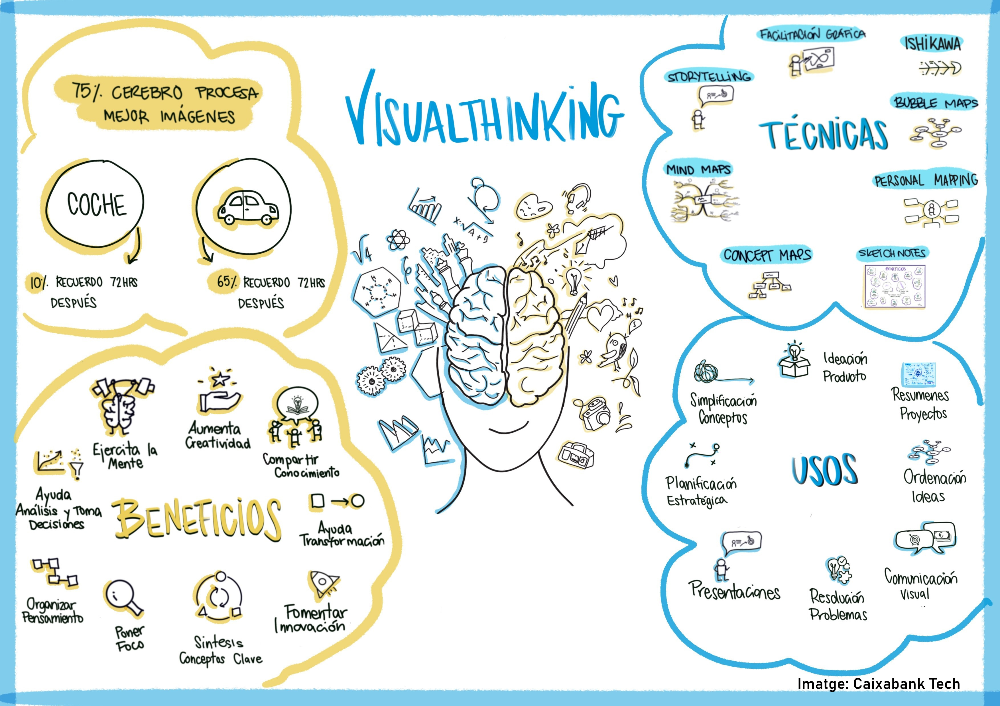
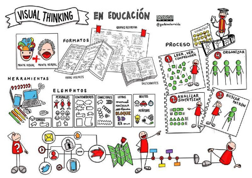
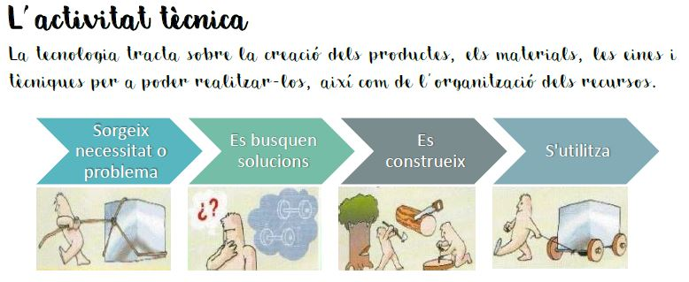
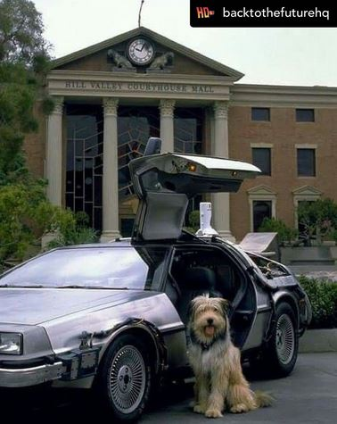
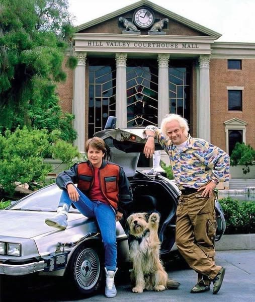

L'Einstein ens guia! 🦮
Hola sóc l'Einstein!
Imagino que ja em coneixeu, sóc el company de viatge del 'Doc' i també sóc amic del Marty McFly i de la Jennifer Parker. Durant tot el temps que he estat convisquent amb el Doc he après moltes coses sobre ciència i tecnologia.
Jo seré el vostre guia i espero acompanyar-vos a vosaltres, també, durant aquest nou curs 2025-26.
A continuació, trobareu tota la informació que necessiteu en relació als passos a realitzar durant el el curs sobre el diari d'aula i el procés tecnològic i els manuals o memòries tècniques que haureu de fer per garantir uns resultats òptims i eficients!
Diari d'aula · Diari de tecnologia
En aquest diari enregistrarem la informació més important del que anirem aprenent durant el curs, en un format resumit utilitzant el mètode visual thinking (pensament visual) que permet organitzar i representar idees mitjançant esquemes i dibuixos.


Imatge: Garbiñe Iturralde
L'activitat tècnica
Llegeix el text i observa les imatges:

Memòria tècnica
La memòria tècnica és una espècie de manual d'instruccions. La diferència és que aquest document és més complet, on també es registra el procés de creació: idees inicials, esbossos, materials i eines utilitzades, passos del procés de construcció, comprovacions, explicar problemes que ens hem trobat i com s'han resolt, etc. del que volem que sigui el nostre producte final.
Per poder portar-la a terme, és molt necessari tenir en compte seguir els passos de l'apartat anterior "El procés tecnòlògic".
 